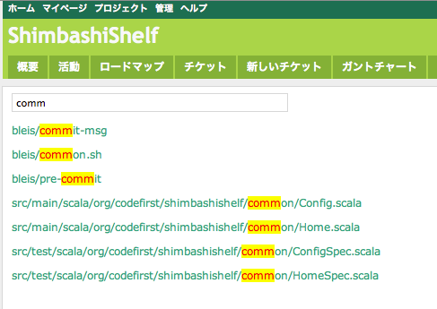
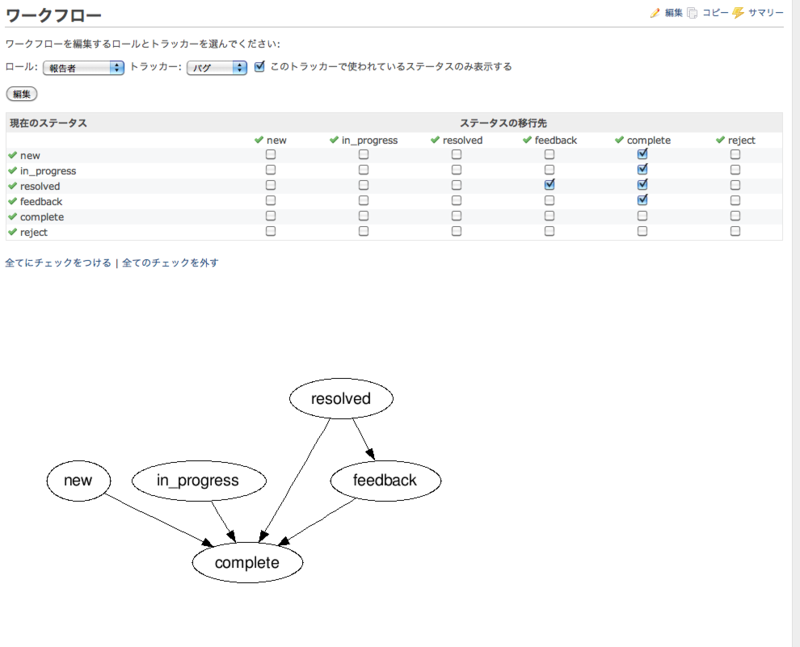
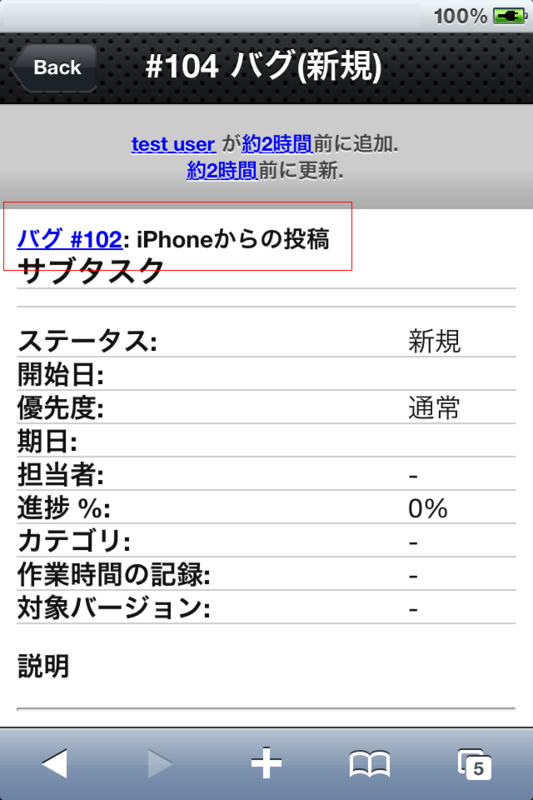

プロフィール
コードが汚くてなにがなんだか分からないところにコメントで
FIXME OR DIE と書いて修正内容を記述しておいた。次見た人がな
おしてくれるだろう。そしてそれはきっと自分。
門前仲町で、日々レガシーコードと格闘する凄腕プログラマ（ホントはえすいー。
使用言語はRuby/Java/C#/Scala/OCamlなど。好きな言葉は『スラマッパギ』。
戸松遥が好き過ぎて生きるのが辛い。でもヲタクではない。
ラーメンを食べてはならない。でも唐揚げは食べてもいい。ジョ
ナサンの唐揚げが好き。お酒はもう飲まない。
最近、ジョギングを始めた。ジョギング界最速の男を目指す。
朝はドトール。でも最近、混んでるのであまり行っていない。
Redmineプラグイン一覧
レポジトリインクリメンタルサーチプラグイン
Redmine のリポジトリからファイル名をインクリメンタルサーチします。正規表現が利用可能です。
$ cd $RAILS_ROOT/vender/plugins
$ git clone git://github.com/suer/redmine_incr_code_search.git

Redmine MS Project プラグイン
MS Projectで引いた線表から、Redmineのチケットを作成します。
Sub Taskingにも対応しています。
ちなみに Excel で作成した線表なんて存在してないので、対応していません。
$ cd $RAILS_ROOT/vender/plugins
$ git clone git://github.com/suer/redmine_iphone_plugin.git
ワークフロー可視化プラグイン
Redmineのワークフローを可視化します。
日本語には対応していません。
$ cd $RAILS_ROOT/vender/plugins
$ git clone git://github.com/suer/redmine_workflow_viz.git

iPhone UIプラグイン
RedmineにiPhone UIを追加します。
techbang氏の同名プラグインをforkしています。
$ cd $RAILS_ROOT/vender/plugins
$ git clone git://github.com/suer/redmine_iphone_plugin.git
